· EEM202
EEM202 Devre Teorisi II: Laplace Dönüşümüyle Devre Analizi
EEM202 – Devre Teorisi II · 21.05.2014 · 16.10.2026
Bu yazı, Başkent Üniversitesi Elektrik-Elektronik Mühendisliği EEM202 Devre Teorisi II dersinde Yrd. Doç. Dr. Selda Güney'in hazırladığı Laplace dönüşümünün devre analizinde kullanımı sunumunun içeriğidir (Mayıs 2014). Sunum, dersin kaynak kitabı Nilsson & Riedel Electric Circuits (10. baskı) şekilleri üzerine kurulu; slaytlarda yalnızca başlıklar ve şekiller var. Bu yüzden yazıda başlıklar ve şekillerdeki eleman değerleri metin olarak verildi, şemalar görsel olarak eklendi. Orijinal PDF yazının sonunda indirilebilir.
İçerik
- s bölgesinde devre elemanları
- s bölgesinde devre analizi ve uygulamalar
- Aktarım (transfer) fonksiyonu
- Kısmi kesirlere açılım ve aktarım fonksiyonu
s bölgesinde devre elemanları
| Eleman | Zaman bölgesi | s bölgesi, seri eşdeğer | s bölgesi, paralel eşdeğer |
|---|---|---|---|
| Direnç | v = Ri | V = RI | – |
| İndüktör | v = L di/dt, i = (1/L)∫₀ᵗ v dx + I₀ | V = sLI − LI₀ | I = V/(sL) + I₀/s |
| Kapasitör | i = C dv/dt, v = (1/C)∫₀ᵗ i dx + V₀ | V = I/(sC) + V₀/s | I = sCV − CV₀ |
- İndüktör: Seri eşdeğerde sL empedansına seri LI₀ gerilim kaynağı; paralel eşdeğerde sL'ye paralel I₀/s akım kaynağı bulunur. Depolanmış başlangıç enerjisi sıfırsa yalnızca sL kalır.
- Kapasitör: Seri eşdeğerde 1/sC empedansına seri V₀/s gerilim kaynağı; paralel eşdeğerde 1/sC'ye paralel CV₀ akım kaynağı bulunur. Depolanmış başlangıç enerjisi sıfırsa yalnızca 1/sC kalır.
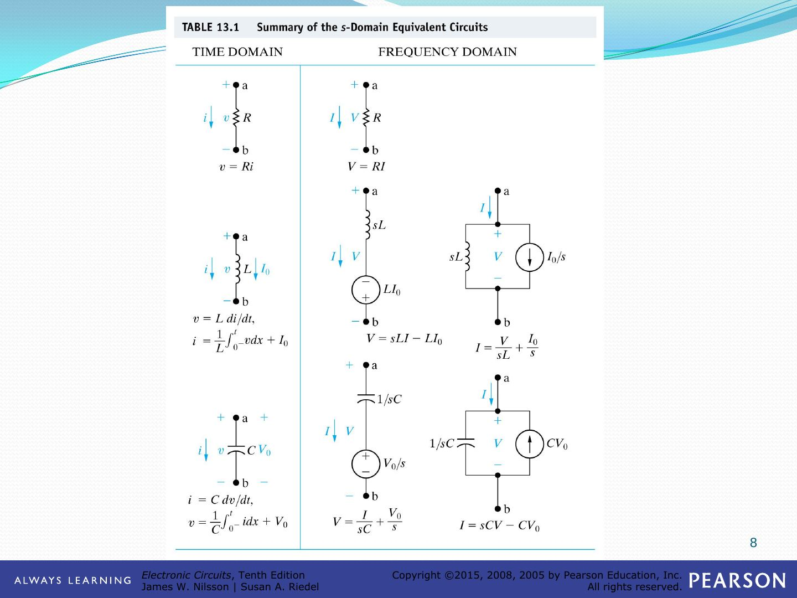
s bölgesinde devre analizi ve uygulamalar
RC devrenin doğal tepkisi
Başlangıçta V₀ gerilimiyle yüklü C kapasitörü, t = 0'da kapanan anahtarla R direnci üzerinden boşalır. Sunumda devre s bölgesinde iki şekilde çizilir:
- Seri eşdeğer gösterim: 1/sC ile seri V₀/s kaynağı, R üzerinden I akımı
- Paralel eşdeğer gösterim: CV₀ akım kaynağı, 1/sC ve R paralel; çıkış V
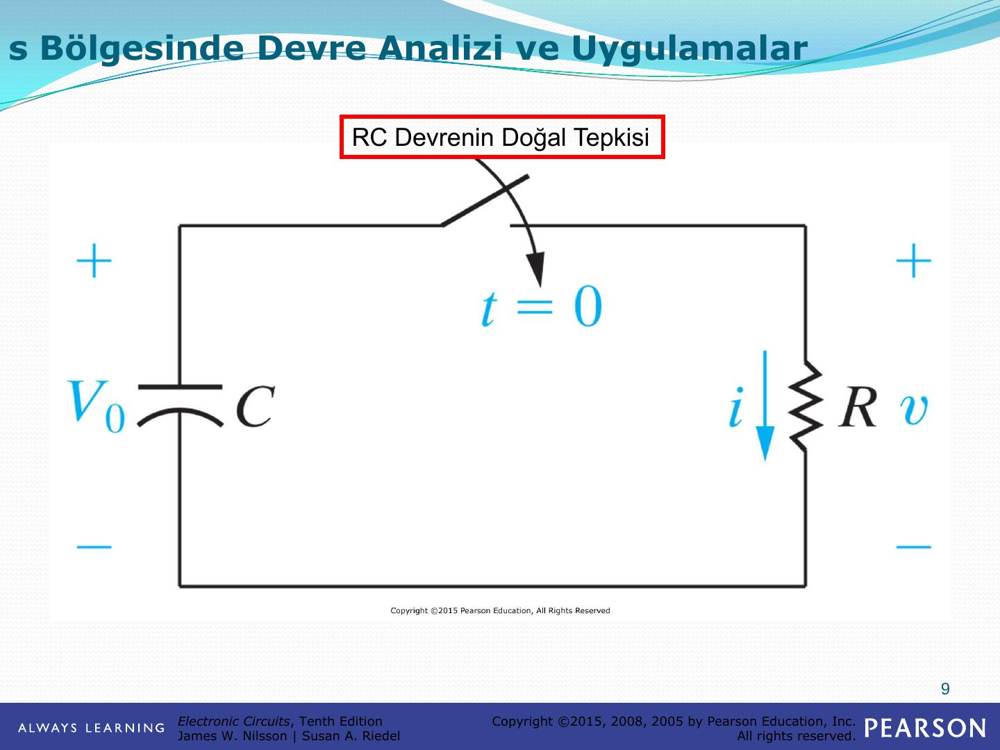
Paralel devrenin doğal tepkisi
I_dc = 24 mA akım kaynağı t = 0'da açılan anahtarla paralel C = 25 nF, R = 625 Ω, L = 25 mH devresini besler; i_L akımı aranır. s bölgesi eşdeğerinde kaynak I_dc/s, elemanlar 1/sC, R ve sL olur.
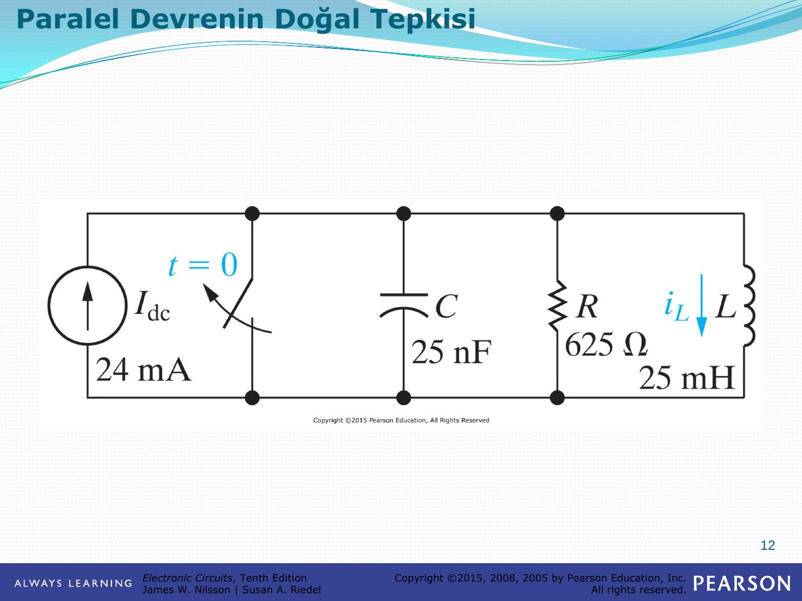
Çok ağlı bir devrenin basamak tepkisi
336 V kaynak t = 0'da devreye girer; 8,4 H ve 10 H endüktanslar ile 42 Ω ve 48 Ω dirençlerden oluşan iki gözlü devrede i₁ ve i₂ aranır. s bölgesinde kaynak 336/s, endüktanslar 8,4s ve 10s olur; I₁ ve I₂ göz akımlarıyla çözülür.
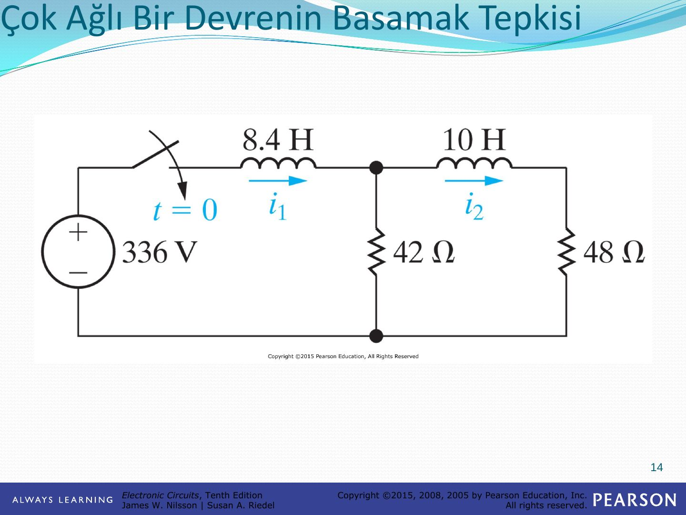
Thevenin eşdeğerinin kullanımı
480 V kaynak, 20 Ω, t = 0'da kapanan anahtar, 2 mH endüktans ve 60 Ω üzerinden 5 µF kapasitörü besler; i_C ve v_C aranır. s bölgesinde kaynak 480/s, endüktans 0,002s, kapasitör 2×10⁵/s olur. a-b uçlarına göre Thevenin eşdeğeri:
- V_Th = 480/(s + 10⁴)
- Z_Th = 80(s + 7500)/(s + 10⁴)
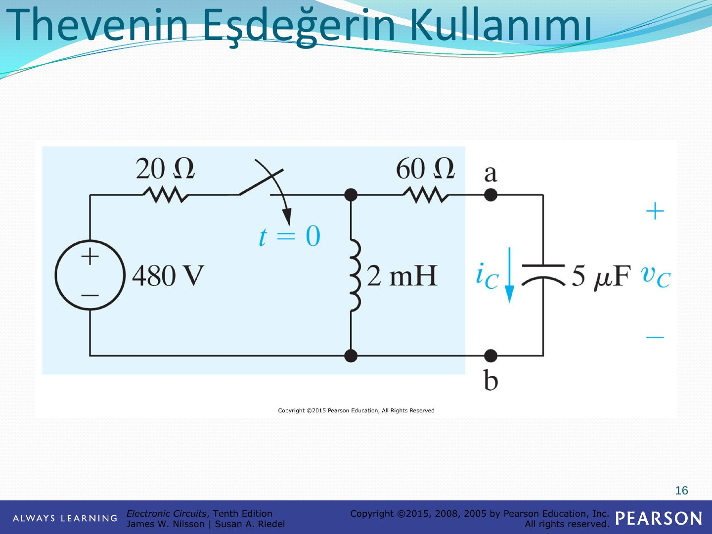
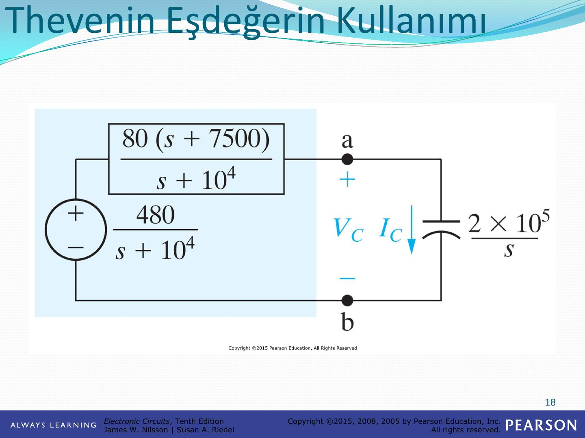
Karşılıklı endüktanslı bir devre
60 V kaynak, 9 Ω ve 3 Ω dirençler, t = 0'da a konumundan b konumuna geçen anahtar; 2 H ve 8 H sargılar arasında M = 2 H karşılıklı endüktans, ikinci tarafta 2 Ω ve 10 Ω. Karşılıklı endüktans T eşdeğeriyle değiştirilir: (L₁ − M) = 0 H, M = 2 H, (L₂ − M) = 6 H. s bölgesinde ortak kol 2s empedansı ve başlangıç akımından gelen 10 V'luk kaynakla gösterilir.
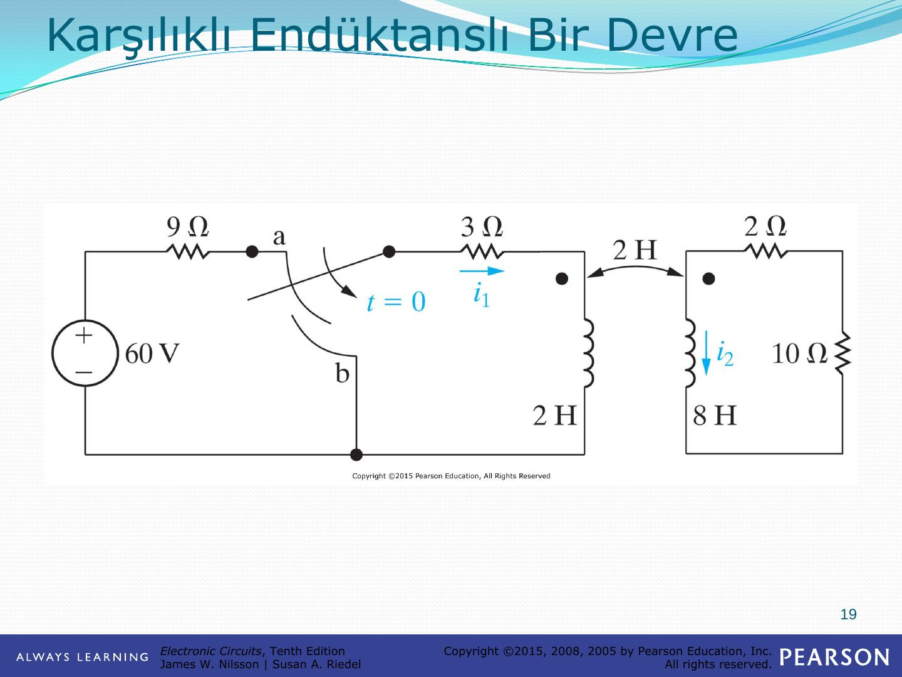
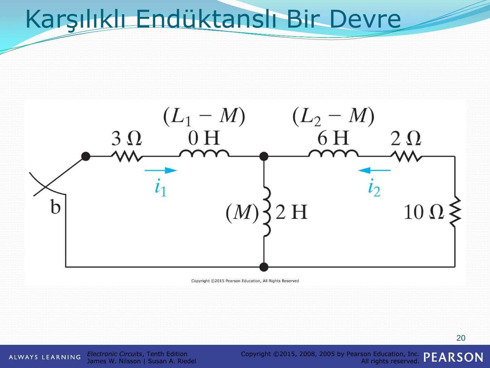
Sonuçta i₂ akımı sıfırdan başlayıp t = 549,31 ms'de en büyük değeri olan 481,13 mA'e ulaşır ve sonra sönümlenir.
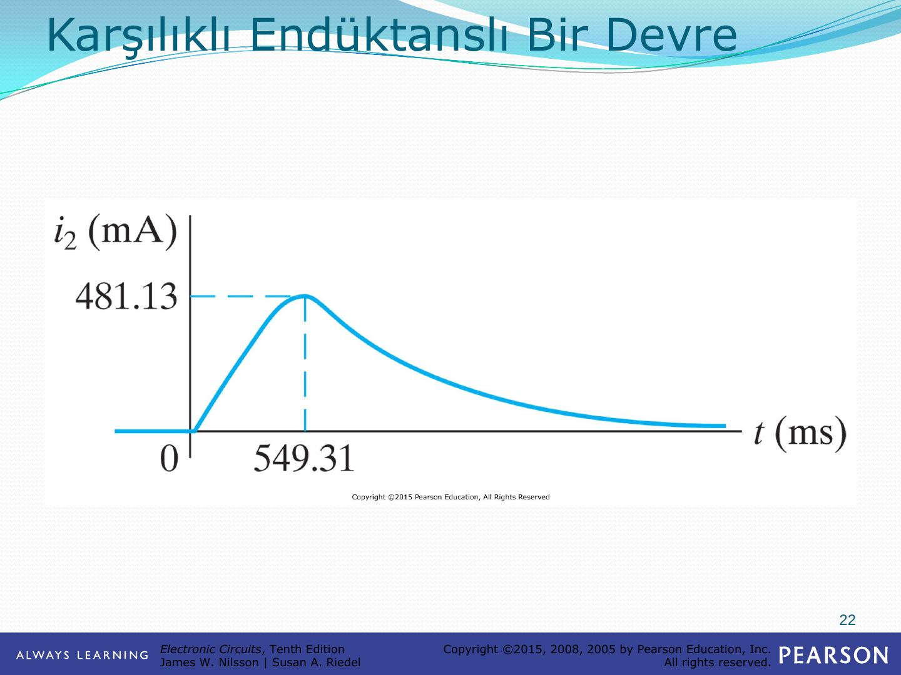
Süperpozisyon kullanımı
v_g gerilim kaynağı, R₁, L (başlangıç akımı ρ), C (başlangıç gerilimi γ), R₂ ve i_g akım kaynağından oluşan devrede v₂ aranır. s bölgesi eşdeğer devresinde endüktansın başlangıç koşulu ρ/s akım kaynağı, kapasitörünki γC akım kaynağı olarak gösterilir.
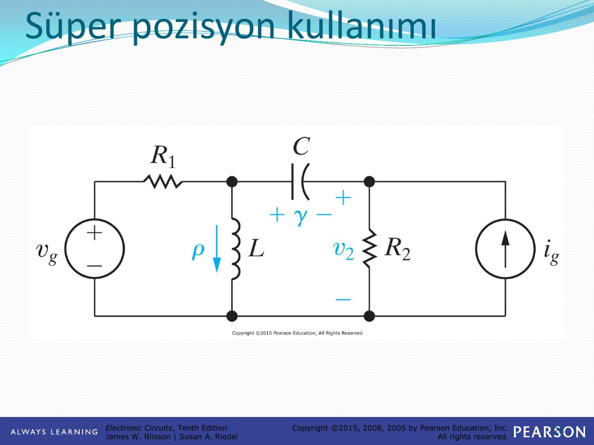
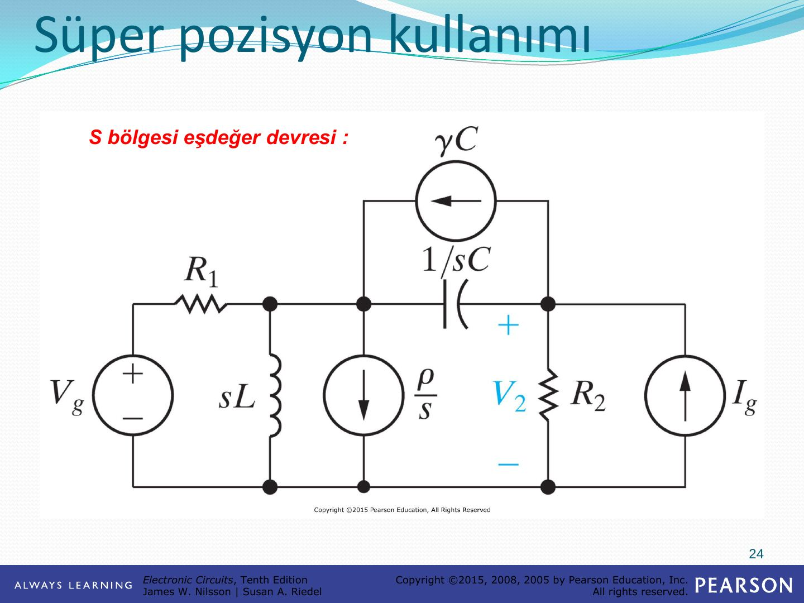
V₂, dört kaynağın etkisinin toplamı olarak bulunur:
- Sadece devrede V_g gerilim kaynağı bırakılırsa → V₂′
- Sadece devrede I_g akım kaynağı bırakılırsa → V₂″
- Sadece devrede endüktansın başlangıç akım kaynağı (ρ/s) bırakılırsa → V₂‴
- Sadece devrede kondansatörün başlangıç akım kaynağı (γC) bırakılırsa → V₂⁗
Transfer (aktarım) fonksiyonu
Sunumda transfer fonksiyonu, V_g kaynağı, R, sL ve 1/sC'den oluşan seri devre üzerinde gösterilir; I akımı ya da kapasitör gerilimi V çıkış olarak alınabilir.
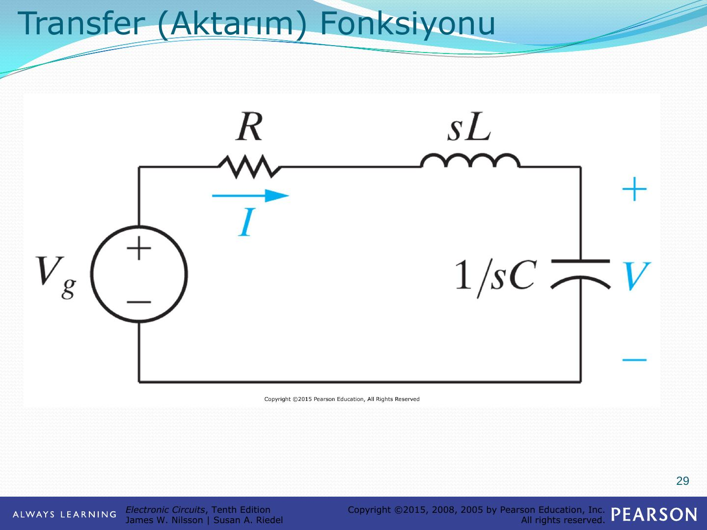
Örnek: v_g kaynağı 1000 Ω üzerinden, 250 Ω + 50 mH seri kolu ile 1 µF kapasitörün paralel bağlı olduğu düğümü besler; çıkış v_o. s bölgesinde 50 mH → 0,05s, 1 µF → 10⁶/s olur.
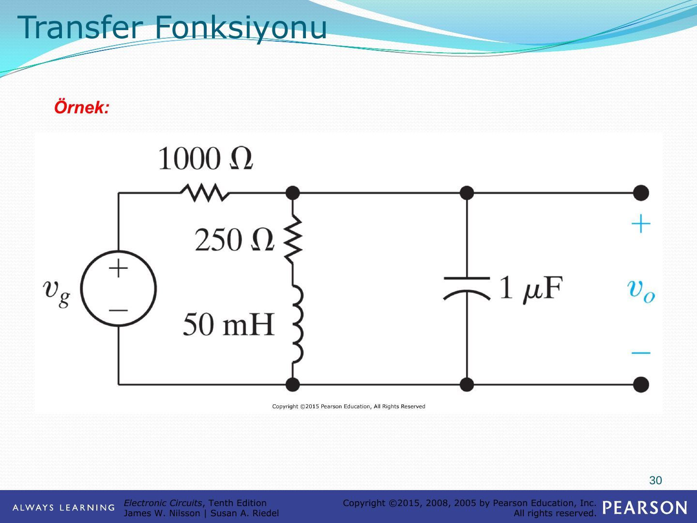
Kısmi kesir açılımı ve transfer fonksiyonu
Son slayttaki grafik, örnek devrenin v_o çıkışını gösterir: v_o, başlangıçtaki geçici bölümden sonra (10 000t − 0,4) mV doğrusuna oturur.
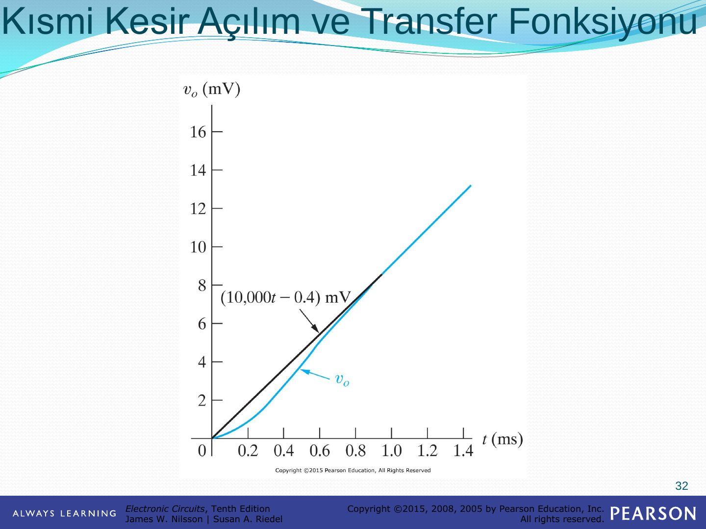